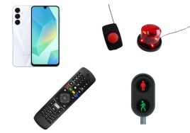
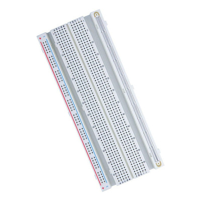
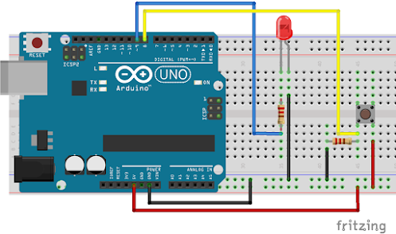

Bem-vindos! Hoje vamos entender como a eletricidade dá vida aos robôs. Para isso, precisamos de componentes que controlem essa energia.

Vamos explorar os 3 pilares básicos: LED, Resistor e Protoboard.
1. O LED (Luz do Robô)
O LED é um componente que emite luz. Mas atenção: ele é "fresco"! Se ligar invertido, ele não acende. Se ligar com muita força, ele queima.
Anodo (+): Perna maior.
Catodo (-): Perna menor.
2. O Resistor (O Segurança)
A bateria manda muita energia. O resistor serve para "segurar" o excesso de eletricidade e proteger o LED. Sem ele, nosso LED teria uma vida bem curta!
3. Protoboard (O Tabuleiro)
É nela que montamos tudo. Pense nela como um LEGO elétrico: você encaixa as peças nos buraquinhos e elas se conectam por trilhas de metal que estão escondidas lá dentro.

4. Circuito Fechado
A eletricidade é como uma pista de corrida circular. Ela sai do positivo (+), passa pelos componentes e precisa voltar para o negativo (-). Se o caminho abrir, a luz apaga!

Pergunta 01
Qual a função do Resistor no circuito?
Pergunta 02
Como identificamos o lado Positivo (Anodo) do LED?
Pergunta 03
Para que serve a Protoboard?
Pergunta 04
O que acontece se o circuito estiver "Aberto"?
Pergunta 05
Qual a unidade de medida da resistência elétrica?
Pergunta 06
O LED é um componente polarizado. Isso significa que:
Pergunta 07
Na Protoboard, como os componentes se conectam?
Pergunta 08
O que é o Tinkercad?
Pergunta 09
Por que os robôs precisam de sensores e componentes?
Pergunta 10
No circuito básico do LED, a energia deve ir do polo positivo para...